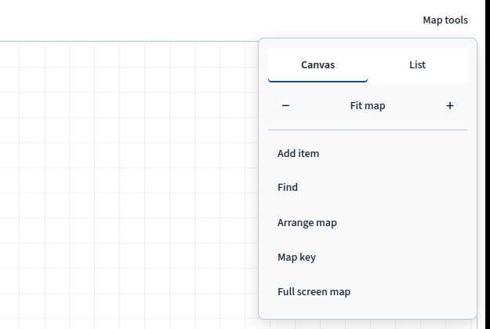
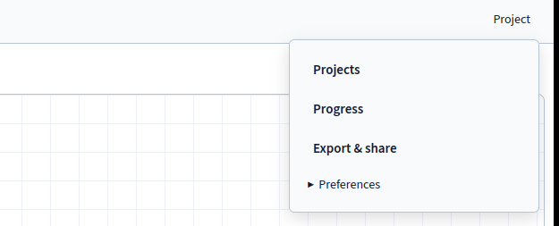
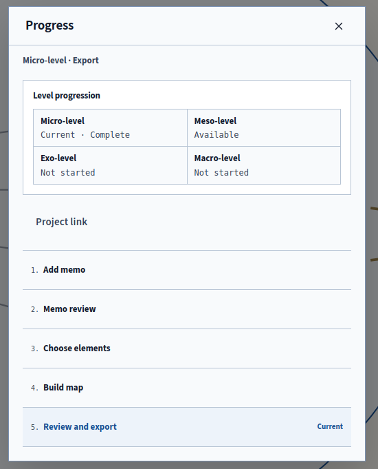

Workspace Basics
Move between the map and your writing without losing your place in either.
Map and Notebook
Use the footer to switch between Map and Notebook. The Map shows items and relationships within the ecological rings. Select an item or connection to edit it. On a wide screen, the Notebook opens beside the canvas. On a phone, it replaces the canvas until you switch back.
The Notebook presents one writing task at a time. Its selector switches between Memo and suggestions and Field Notes. Selecting a map item opens its details and interpretation. Edit Label or Relationship there, then choose Save or Cancel; moving focus does not save a draft. Saving wording keeps node positions and the current view. Your map position and writing remain intact when you switch views, and the app makes no model request.
The Level Selector
The top-bar selector names the current level and its state, such as Micro · complete. You can return to a completed level and edit it. The next locked level opens once you complete the preceding level.
Map Tools

Open Map tools when you need to change how you view or arrange the map. Canvas shows the drawing, and List shows the same items and relationships in a table suited to review or screen-reader work. Use Add item to create an item at the current level, or Find to search labels and jump to an existing one.
The minus and plus buttons change the zoom. Fit map brings every visible item into the window, and the 0 key does the same when the canvas has focus. Arrange map lays out the items automatically. You can undo layout changes from the current visit with Ctrl/Cmd+Z.
Map key explains the level colors and line styles. Full screen map closes the Notebook and fills the viewport with the map. Press Esc to leave full screen.
Project Menu

The Project menu holds actions for the project as a whole. Projects returns to the current workspace's project list. Progress shows the current level's five stages and the route through the levels, along with the project link. In a course workspace, it also provides Submit revision.
Export & share opens the project-link and file-export choices described in Export & Sharing. Preferences holds display options and Automatic suggestion addition. When you enable that setting, suggestions that pass structural checks enter the map immediately for you to review.
The Five Stages

Each level follows five stages with fixed numbers and labels. In 1. Add memo, set the inquiry and supply the level's memo. In 2. Memo review, read that source with or without model suggestions. In 3. Choose elements, decide which items belong on the map.
During 4. Build map, place the items and describe their relationships with evidence. In 5. Review and export, answer Field Notes and inspect the completed level. You can run Map Check, export the map, or submit a revision for your instructor to review.
Moving Around
| Task | Control |
|---|---|
| Pan | Drag empty canvas, middle-button drag, or hold Space and drag. Arrow keys pan a focused canvas. |
| Zoom | Scroll at the pointer, pinch on touch, or the zoom buttons. |
| Move an item | Drag it. |
| Overview | Fit map or 0. |
| Undo a layout change | Ctrl/Cmd+Z; redo with Ctrl/Cmd+Shift+Z. |
The app blocks removal, or changing a Micro setting to a non-setting type, while active relationships, memberships, or scopes depend on it. Resolve those references first so the change preserves the rest of your work. An item’s mapped level stays fixed; see The Map for wording edits and level corrections.
Footer
Report a problem opens a field for your description and sends it with your verified account name and the app release. The report excludes memo text, map content, and Field Notes.